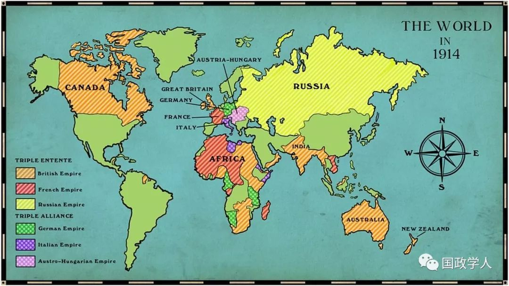
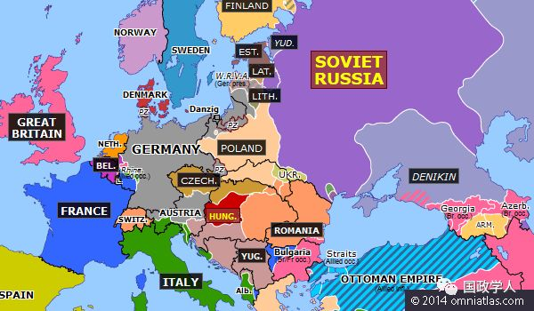

收录于合集

简 介
【作者】 ** ******
简 ·伯班克（Jane Burbank），纽约大学历史学和俄罗斯与斯拉夫研究教授，主要研究领域为俄罗斯史、法律文化、帝国，著有《世界帝国史：权力与差异政治》、《法庭上的俄国农民》等。
弗雷德里克 ·库珀（Frederick Cooper），纽约大学历史学教授，主要研究方向为殖民主义、去殖民化和非洲史，著有《去殖民化与非洲社会》、《争论中的殖民主义》。
【编译】 柯孜凝
【校对】 刘金晶 李博轩
【审核】 王国欣 徐枫潇
【来源】 Jane Burbank, Frederick Cooper(2019). Empires after 1919: old, new, transformed. International Affairs, 95, 81–100.
【期刊】 《国际事务》（International Affairs）是国际关系领先的同行评审学术期刊。根据期刊引用报告，该期刊的2017年影响因子为2.952，在世界上排名第8。

1919年后的帝国：旧的、新的与转型的
Empires after 1919：old, new, transformed
Jane Burbank and Frederick Cooper
内容提要
1919年并不是帝国的丧钟，它为新帝国的开启提供了可能。战败帝国遭到了毁灭，胜利者则通过建立新的统治工具——委任统治以维持其帝国权力。日本被承认为主要的帝国行为体，苏联则建立了一种新的帝国模式，德国则因对被排除在世界帝国之外感到不满而建立了纳粹政权领导的第三帝国，美国也在推动建立新国际秩序后发展了一套权力运作的机制。
这篇文章论述了一战后数十年中不同帝国的发展轨迹。 作者反对将 1919年纳入“帝国向民族国家”的线性演变中。与此相反，作者认为帝国的连续性、转型和创造塑造了第一次世界大战后二十年的特征。第二次世界大战威胁着殖民帝国的存在，但即便如此政治重组也存在多种可能性，帝国权力的变体以及民族国家和帝国的替代品仍在发挥作用。

文章导读
在文章开篇部分，作者首先对“1919年是具有帝国可能性的一年”这一观点进行初步论证。为此，作者给出了以下四点理由：
1. 战后的条约并没有就新的国际规范和实践达成共识，大部分基于民族自决建立的民族国家实际上还处于帝国的控制中。
2. 20世纪20年代，帝国自身处于不断变化中，统治方式也持续革新。
3. 殖民地对殖民帝国的反抗并不只是通过民族自决建立国家，还包括对帝国公民权利的诉求的抗争。
4. 二战后，国家依旧有政治选择的可能性，如葡萄牙在1974年仍然掌控着其殖民的非洲帝国。
综上所述，作者认为 1919年后的政治可能性并不局限于民族国家的建立，而是具有多种可能性的。下文作者从殖民帝国对领土的调整和重新分配、战败帝国的重组、潜在帝国的新主张以及帝国世界在第一次世界大战后二十年间的转变这四个方面对此进行了更为细致的论述。
**1
** 调整和重新分配：战时和战后的殖民帝国
作者在这部分主要论述了获胜的帝国的行为。 **它们不仅获得了大量的领土，而且还创造了一种新的统治形式 ——委任统治。**作者认为英法能够在战争中取得胜利的原因之一，是他们比起德国能更有效地运用帝国的资源。在统治地区的支持下，英国可以在战时调用印度军队以及殖民地供给的劳动力和商品，这些都促成了同盟国的胜利。但战争结束后，由于不再迫切需要殖民地区的支持，殖民帝国转变了态度，将“差异”置于共同的帝国利益之上。然而，殖民地区对殖民帝国的反抗并没有导致殖民主义的崩溃。相反，这一反抗催生帝国创造出了一种新的殖民治理工具——委任统治。委任统治制度使得帝国主义道德化并且为其增加了一层国际监督机制，同时也使反殖民运动更加关注整个制度的罪恶，而不是特定的不公正问题。
1919年后，反帝运动成为了帝国世界的一部分，但统治“他者”的常态仅仅是受到动摇，尚未被打破。殖民地统治者成功利用了分治非洲政策来防止反殖民者联合非洲大陆。而主要帝国仍然能以成为帝国的臣民作为回报，吸引殖民地人民归顺。

1919年6月28日
**2
** 失败的帝国
作者在这一部分分析了一战的战败国在 1919年后的变化，认为一战使战败国成为了战胜帝国讨价还价的棋子，而此举也产生了新的民族问题和冲突。
在战后，德国被剥夺了其海外殖民地和欧洲的一些非日耳曼领土。德国大部分精英和公众对德国的帝国资格被剥夺而其他国家得以保留的事实大为光火。随着希特勒的上台，第三帝国再次热衷于重获帝国遗产——荣誉和领土，并且希冀在一个帝国仍是常态的世界中成为主导。战败的奥斯曼帝国是大国瓜分的主要对象,其解体带来的政治不稳定直到今天仍在继续。哈布斯堡王朝在欧洲的重新出现也导致了痛苦的持续，数百万人被迫逃离或被驱逐出俄罗斯、东南欧和中欧。在失败的帝国中创造同质化的民族实体使得许多本不属于这一地区的民众被迫留下，为解决这一问题而出台的保护“少数群体”的政策也失败了。作者认为，战胜国只对战败国使用少数民族概念并拒绝遵循巴黎会议提出的反对种族歧视原则的事实都表明，胜利者不愿意改变当前符合自身利益的帝国秩序。
**3
**
** ** 帝国新主张：改造亚洲****
作者在这一部分分析了一战后崛起的新帝国 —日本—从亚洲帝国走上世界帝国的道路的进程以及1919年亚洲其他国家进行的帝国建设尝试。
作者认为日本是战后最成功的参与者，当年对中国决定性的胜利使其走上了建立一个更大的亚洲帝国和加入世界大国的道路。从1902年英日同盟建立开始，西方列强开始意识到日本是亚太地区权力斗争中雄心勃勃的主要参与者。1905年，日本击败俄罗斯奠定了其作为帝国竞争者的地位。随后日本从中国名义上的统治者手中获得了辽东半岛的租约，并在1910年吞并了朝鲜。
作者指出，欧洲世界大战的爆发为日本提供了一个建设帝国“神圣”的机会。日本于1914年8月23日向德国宣战，并快速将军队派遣至中国大陆和德国的殖民地。亚洲角斗场上的迅速胜利、地中海的海军参战和对盟国的援助，以及1918年开始在西伯利亚对俄罗斯的进攻行动使日本在1919年的巴黎和平会上获得了实质性回报，日本帝国的实力得到了极大的加强。
1919年造就了日本帝国，也为亚洲其他国家成为潜在帝国提供了机遇。一些国家试图抓住这次机遇，但最终失败了。澳大利亚作为大英帝国的一部分，将世界大战视为自己的机会，但只在大战中获得了一块必须要与英国一同管理的领土。印度在战争期间提出了建立远至东非的印度洋帝国的想法，但没有受到英国当局的赞同。泛蒙古帝国的努力也由于布尔什维克的阻止而失败了。
**4
**
** ** ** ** ** 转型**********
**如果说清朝的崩溃给其他帝国带来了各式各样的机会，那么另一个帝国 ——罗曼诺夫王朝的解体和苏联的建立则改变了1919年之后的帝国格局。**作者认为，俄罗斯通过建立一种新的帝国恢复了中央集权。通过对政体中所有次级单位官员的集中控制，布尔什维克将这些共和国及其族群化的次级单位凝聚在一起。这种 “垂直权力”再现了罗曼诺夫帝国的政治形态。
作者认为，布尔什维克为共产主义提供了一种国家形式，其特点影响了此后的社会主义与帝国。列宁通过建立一党制国家改变了代议制政治。苏联不是一个民族国家，而是一个社会主义的、民族共和国的联邦。通过攻击西方殖民主义、促进共产主义联邦内民族文化的发展和关注亚洲机制，苏联创新了帝国治理方式，在全球范围内实现了权力组织的持久转变。
**5
**
** ** ** ** ** ** ** ** ** 尾声******************
作者认为，特定帝国的崛起导致第二次世界大战遭致了一战所未曾带来的帝国生存危机。新的世界形势源于纳粹的近乎胜利、日本帝国的军事成功以及苏联的抱负与行动。日本打破了帝国扩张的界限，但在东南亚引发了与欧洲帝国和美国的冲突。在纳粹统治下的德国在没有他国强加约束的情况下公然要求加入帝国主义阵营。苏联首先与纳粹合作，后来又与同盟国合作，因为它寻求生存与推进世界各地的共产主义革命。美国不愿意卷入其他大陆的帝国冲突，但其全球野心使其走上了与日本和德国碰撞的道路。
殖民帝国在东南亚和南亚开始瓦解。法国和英国都试图通过开发非洲领土来弥补他们在亚洲失去的控制。但他们发现，开发引发的冲突和解决问题所致的冲突一样多不胜数，承认一些政治声音只是为了政治、经济和社会进步而加强动员。
所有这些都发生在二战的两个真正赢家苏联和美国实力增强的情况下，二者都不承认自己是帝国。在20世纪40年代和50年代，美国人有理由相信，相较于帝国构成的世界，他们的经济、文化影响力与军事力量在由独立国家组成的世界中更能有效地运作。
**6
**
** ** ** ********** ** ** ** ** ** ** ** ** ** 结 论******************
**许多人认为 1919年是从帝国走向民族国家的必经之路，但恰恰相反，作者认为1919年提供了帝国选择的多重可能性。**这一年所发生的事件巩固了胜利者的帝国权力：旧帝国转变为新的共产主义帝国，亚洲帝国扩张至世界帝国，战败的帝国走向分崩离析变成更多同质的政治单元。处于20世纪30年代至40年代的人们并不确定帝国是否会在几年、几十年或者几个世纪内消亡。但即使是在20世纪四五十年代的人们也并不清楚，民族国家是否是取代帝国的唯一选项。实际上在1919年至2019年间，许多时间节点本可以使历史走向相反的一面。作者认为这是因为政治行为体基于时代提供的可能性而选择行动方向，而不是基于早已确定的目的进行选择。
通过超越由过去走向现在这一单一路径的视角，作者揭示了人们在所处时代中所具有的不确定性、希望、恐惧和克制，更重要的是提醒我们，未来的可能性选择仍是多元的。
·简 评·
本文作者通过论述了一战后不同的帝国的发展轨迹，提醒我们 1919年提供了帝国选择的多重可能性。译者认为对一战后帝国发展历史的重新回顾有助于我们重新理解1919年后的世界秩序。民族国家作为当今世界政治中最重要的基本单元，其地位并非自诞生起就得以确定，因为即便在几十年前，帝国仍是被大众所承认的一种地位超越民族国家的政治行为体。通过作者的论述，我们可以发现事物的演进并不总是一种线性演进的过程，历史具有不确定性，未来具有多种可能性。
_ 官网链接： Oxford Academic:_http://doi.org/0.1093/ia/iiy243
_ ** _ 本文由国政学人平台独家编译首发**
更多阅读
【重磅速递】约瑟夫·奈：美国霸权的兴衰：从威尔逊到特朗普 | 国政学人
【重磅推荐】巴里·布赞：英国学派视角下的中国崛起 | 国政学人